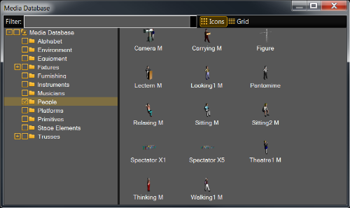

To open the media database, click on View in the menu bar and then Media Database. Import 3D objects from the media database into the stage view.

The media database provides 3D objects for the stage. There are 12 different folders available.
On the top is a filter field. Type the search word in the filter to search a specific object in the media database.
There are two views available. The icon view and the grid view.
The icon view displays an icon of the 3D object along with the name.
To import a 3D object from icons view into the stage view, select the object and move it via drag and drop into the stage view or double click on the icon.
The grid view displays additional in columns the
To import a 3D object from the grid view into the stage view, double click on the object row.